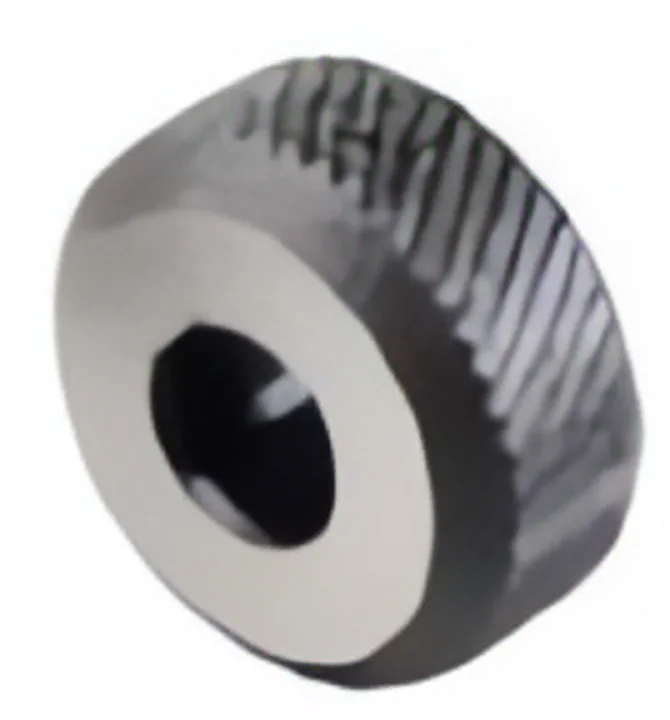

GROZ · Precision Tools
Knurls
CAT NR K58/FR · ORD NR 12831
| CAT NR (catalogue number) | K58/FR |
|---|---|
| ORD NR (order number) | 12831 |
| Size (inch) | 5/8" |
| Variant (printed column) | FINE RIGHT |
Open in the catalogue The catalogue PDF, page 66
From the GROZ Precision CA-03 catalogue. Not yet verified: these details were read from the printed catalogue automatically; check the catalogue page before ordering.